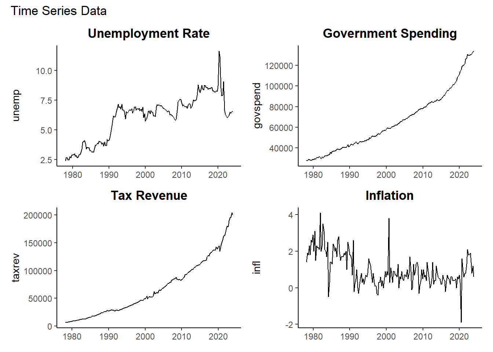
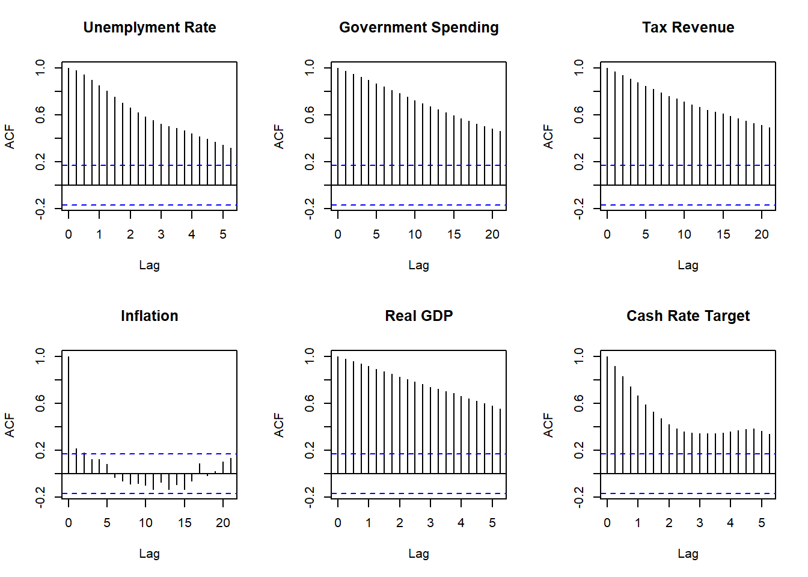
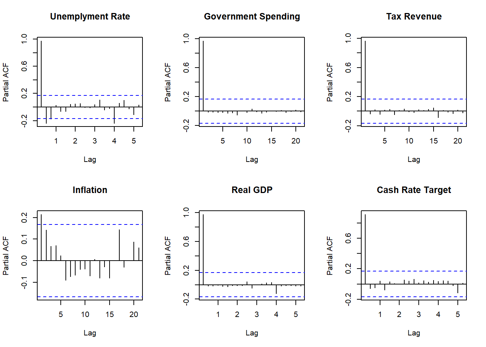
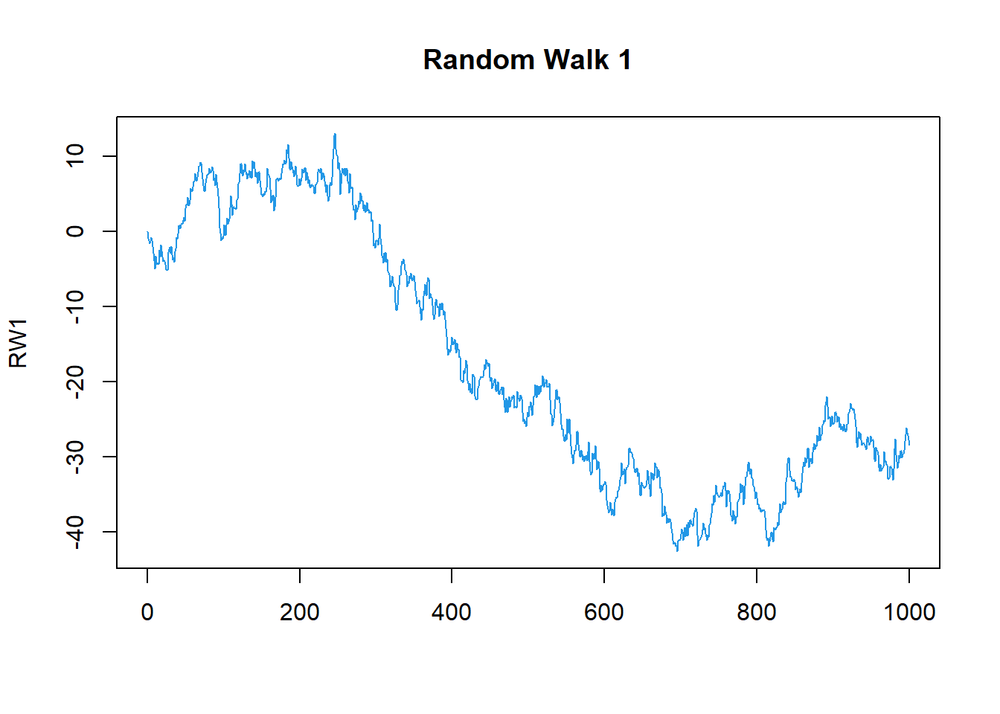
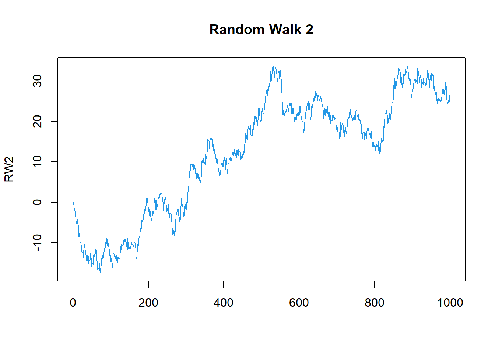
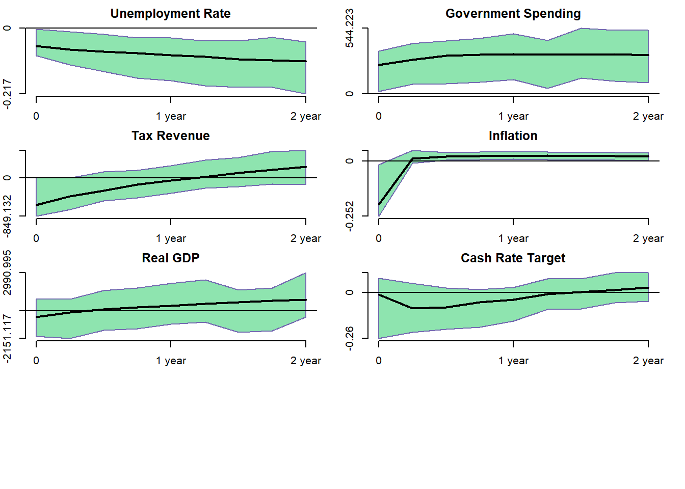
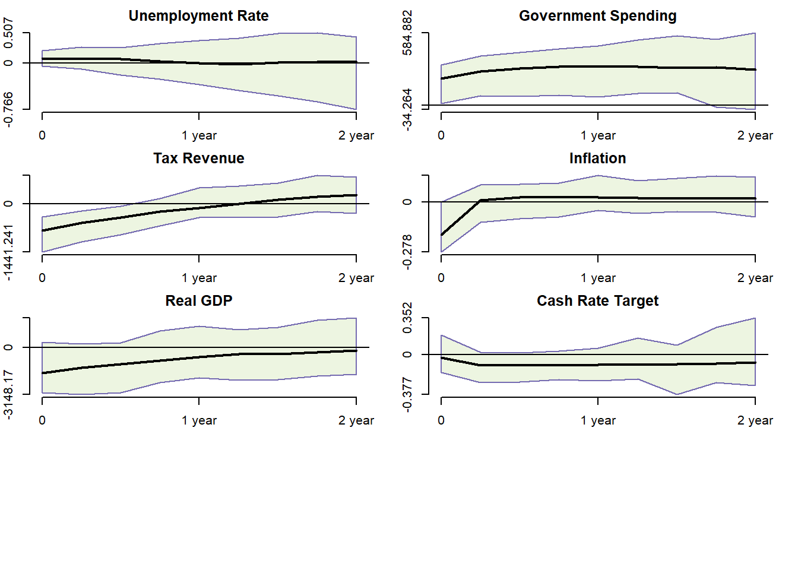

| Length | Mean | SD | Min | Max | |
|---|---|---|---|---|---|
| unemp | 136 | 6.35 | 1.88 | 3.49 | 11.22 |
| govspend | 136 | 76131.90 | 25342.56 | 42816.00 | 134015.00 |
| taxrev | 136 | 84711.50 | 45924.25 | 27529.00 | 203558.00 |
| infl | 136 | 0.67 | 0.62 | -1.90 | 3.80 |
| rgdp | 136 | 403378.21 | 115619.48 | 229170.00 | 609750.00 |
| cr | 136 | 4.59 | 2.86 | 0.10 | 16.75 |
The Effects of Fiscal Policy Shifts on Unemployment Rates
Abstract. This study investigates the dynamic impact of fiscal policy shifts on unemployment rates through a Structural Vector Autoregression (SVAR) model. Utilizing time series data for government spending, tax revenue, inflation, and unemployment rates, we analyze the interplay between fiscal activities and labor market performance within an Australian context. The SVAR model, equipped to dissect the influence of systematic fiscal shocks, reveals insights into how fiscal policy affects employment.
Keywords. SVARs, Fiscal Policy, Unemployment Rates, Government Spending, Tax Revenue, Sign Restriction
1. The Question, Objective, and Motivation
The objective of this research project is to assess the effects of fiscal policy shifts on unemployment rates. I aim to investigate how unemployment rates respond to changes in government spending and taxation under various fiscal policy frameworks.
Unemployment is pivotal in the macroeconomic framework, directly tied to social welfare and economic performance. Considering the economic challenges faced by Australia, the examination of fiscal policy’s influence on unemployment is timely. For instance, Leigh (2012) found that fiscal consolidation efforts in Australia could potentially lift unemployment rates in the short term. Chapman and Kapuscinski (2000) identified that the Australian labor market exhibits notable sensitivity to macroeconomic policy shifts, with fiscal measures playing a significant role in shaping employment trends. These findings have piqued my curiosity about understanding fiscal policy mechanisms in the Australian labor market. By conducting this research, I aim to provide an updated empirical analysis of how contemporary fiscal policy adjustments are impacting unemployment rates in Australia, thereby offering insights that may inform policy refinement for enhanced economic resilience and labor stability.
2. Data and Their Properties
2.1 Variables Selected
Unemployment Rate(UNEMP)(in %): Monthly data on the unemployment rate in Australia, sourced from the Australian Bureau of Statistics (ABS). In further steps, it will be converted to quarterly data.
Government Spending(GOVSPEND)(in billion$): Quarterly data on total government expenditure, including both consumption and investment, also obtained from ABS.
Tax Revenue(TAXREV)(in billion$): Quarterly tax revenue data for the Australian government, which can be sourced from ABS.
Inflation Rate(INFL)(in %): The consumer price index (CPI) from which the quarterly inflation rate can be calculated, available from ABS.
Real Gross Domestic Product(RGDP)(in billion$): Quarterly data of the value of all goods and services produced by Australia, adjusted for inflation. Sourced from RBA.
Cash Rate Target(CR)(in%): Quarterly data of the interest rate that banks pay to borrow funds from central banks in the overnight markets, set by RBA.
2.2 Why Chose Them?
The chosen variables are integral to capturing the broad dynamics of fiscal policy and its impact on the labor market. The unemployment rate (UNEMP) is the direct indicator of labor market health. Government spending (GOVSPEND) and tax revenue (TAXREV) are key fiscal policy tools that directly affect aggregate demand, and by extension, employment and output. Inflation rate (INFL) is a crucial economic indicator that can reflect the demand-pull effects in the economy which, in a Keynesian context, may affect the level of employment. Real GDP(RGDP) is included as it reflects the overall economic output and health, directly correlating with job market strength. The cash rate(CR) is a measure of monetary policy influence on fiscal effectiveness and employment levels.
2.3 Data Visualization
The time series plots[Figure 1: Time Series Data] for unemployment rate, government spending, tax revenue, and inflation collectively offer a glimpse into the interplay between fiscal policy and economic indicators in an economy. The unemployment rate displays cyclical patterns with notable spikes, hinting at its sensitivity to economic conditions and potentially reactive fiscal policies. The upward trajectories of both government spending and tax revenue suggest an expanding fiscal capacity over time, likely driven by both economic growth and policy decisions.
Government spending’s steady rise, with occasional steeper inclines, could imply proactive fiscal stimulus during periods of economic downturn, which often sees a lagged corresponding dip in the unemployment rate. Tax revenue’s increase, while generally consistent with economic growth, also shows sensitivity to business cycles, indicating that it’s both a reflection of and a contributor to the fiscal environment. Inflation’s volatility is without a clear trend line.
The steady increase of Real GDP shows the economy’s growth and resilience in response to policy measures and global economic shifts. The fluctuations in the Cash Rate Target reflect the central bank’s monetary policy adjustments aimed at maintaining stability and stimulating economic activity.
These time series hint at a complex relationship where fiscal policy, through government spending and tax revenue, aims to moderate the impacts of economic cycles on unemployment, all while operating within the broader context influenced by inflation dynamics. The ebb and flow in these indicators reflect the challenges and responses in managing an economy over time.

[Table 1: Summary Statistic] shows variables’ description during 1990 Q1 to 2023 Q4.
2.4 Property Tested
From the ACF test[Figure 2: Autocorrelation Function], the unemployment rate shows a strong initial correlation that quickly tails off, indicating that past unemployment only affects the current rate for a short period. Government spending and tax revenue, on the other hand, display more prolonged correlations, suggesting that current values are influenced by a longer history of the series. This persistence might be a sign of a trend or other non-stationary behavior in the series. Inflation shows some initial correlation that diminishes, which could be indicative of cyclical behavior being smoothed out over time.
From the PACF test[Figure 3: Partial Autocorrelation Function], for unemployment, there’s a significant direct correlation with the immediate past, which is not seen in the following lags. This indicates that other than the most recent past, there’s little direct effect on the current unemployment rate. In the case of government spending, tax revenue, and inflation, the PACF plots suggest that after accounting for other factors, the direct correlations are quite minimal. This could imply that these time series are driven by a more complex set of factors than just their immediate past values.


3. Methodology
3.1 Basic Model
The Structural Form (SF) model of Structural VARs is:
\[ \begin{gather*} B_{0} Y_{t} =b_{0} + \sum_{i=0}^{p} (B_{i}Y_{t-i} )+u_{t} \\ u_{t}|Y_{t-1} \sim iid(0_{N},I_{N} ) \end{gather*} \]
\(Y_{t}\) is \(N \times 1\) matrix of endogenous variable.
\(B_{0}\) is \(N \times N\) matrix of contemporaneous relationships also called structural matrix. It captures contemporaneous relationships between variables.
\(u_{t}\) is a \(N \times 1\) vector of conditionally on\(Y_{t-1}\)orthogonal or independent structural shocks. Isolating these shocks allows us to identify dynamic effects of uncorrelated shocks on variables \(Y_{t}\).
\[ Y_t= \begin{pmatrix} unemp_t\\ govspend_t\\ taxrev_t\\ infl_t\\ gdp_t\\ cr_t \end{pmatrix} \]
The Reduced Form (RF) representation is:
\[ \begin{gather*} Y_{t} =\mu_{0} + \sum_{i=0}^{p} (A_{i}Y_{t-i} )+\epsilon_{t} \\ \epsilon_{t}|Y_{t-1} \sim iid(0_{N},\Sigma ) \end{gather*} \]
Either of the SF models lead to the same RF representation through various equivalence transformations
\[ \begin{gather*} \epsilon_t = B u_t = B_0^{-1} u_t \\ B_0 \epsilon_t = u_t \\ \Sigma = BB' = B_0^{-1} B_0'^{-1} \end{gather*} \]
Rewrite the RF models in matrix
\[ \begin{gather*} \mathbf{Y} = \mathbf{X}\mathbf{A} + \mathbf{E} \\ \mathbf{E}|\mathbf{X} \sim MN_{T \times N}(0_{T \times N},\Sigma,I_T) \end{gather*} \]
The first step is to sample the reduced-form parameters (\(A\), \(\Sigma\)). Adopting the conjugate Normal-Inverse-Wishart prior,
\[ \begin{align*} \mathbf{A}| \mathbf{\Sigma} &\sim \mathcal{MN}_{K \times N}(\underline{\mathbf{A}},\mathbf{\Sigma}, \underline{\mathbf{V}}) \\ \Sigma &\sim \mathcal{IW}_N(\underline{\mathbf{S}}, \underline{\nu}) \end{align*} \]
From Minnesota Prior, we have following parameters
\[ \begin{align} \underline{A} &= [0_{N \times 1} \quad I_N \quad 0_{N \times (p-1)N}]' \\ Var[vec(A)] &= \Sigma \otimes \underline{V} \\ \underline{V} &= \text{diag}([\kappa_2 \quad \kappa_1 (p^{-2} \otimes \imath_N)]) \\ \end{align} \] \(\kappa_1\) is the overall shrinkage level for autoregressive slopes with common value \(0.02^{2}\).
\(\kappa_2\) is the overall shrinkage level for the constant term with common value \(100\).
\(p\) is the length. And, finally let
\[ \begin{align*} \hat{A} &= (X'X)^{-1}X'Y \\ R &= (Y - X\hat{A})'(Y - X\hat{A}) \end{align*} \]
For the full conditional posterior distribution, we have
\[ \begin{align*} p(A, \Sigma | Y) &\propto |\Sigma|^{-T/2} \exp \left\{ -\frac{1}{2} \text{tr}\left[(Y - XA)'(Y - XA)\right] \right\} \\ &\quad \times |\Sigma|^{-T/2} \exp \left\{ -\frac{1}{2} \text{tr}\left[(A - \underline{A})'\underline{V}^{-1}(A - \underline{A})\right] \right\} \\ &\quad \times |\Sigma|^{-(\underline{\nu}+N+1)/2} \exp \left\{ -\frac{1}{2} \text{tr}(\underline{S}\Sigma^{-1}) \right\} \\ &\propto |\Sigma|^{-T/2} \exp \left\{ -\frac{1}{2} \text{tr}\left[ ((A - \hat{A})'X'X(A - \hat{A}) + (A - \underline{A})'\underline{V}^{-1}(A - \underline{A}))\Sigma^{-1}\right] \right\} \\ &\quad \times |\Sigma|^{-(\underline{\nu}+T+N+1)/2} \exp \left\{ -\frac{1}{2} \text{tr}\left[ (R + \underline{S})\Sigma^{-1}\right] \right\} \\ &= |\Sigma|^{-T/2} \exp \left\{ -\frac{1}{2} \text{tr}\left[ (A - \bar{A})'\bar{V}^{-1}(A - \bar{A})\Sigma^{-1}\right] \right\} \\ &\quad\times |\Sigma|^{-(\underline{\nu}+T+N+1)/2}\exp\left\{ -\frac{1}{2}\text{tr}\left[ (R+\underline{S}+\hat{A}'X'X\hat{A}+\underline{A}'\underline{V}^{-1}\underline{A}-\overline{A}'\overline{V}^{-1}\overline{A})\Sigma^{-1} \right] \right\} \\ &=|\Sigma|^{-T/2}\exp\left\{ -\frac{1}{2} \text{tr}\left[ (A-\overline{A})'\overline{V}^{-1}(A-\overline{A}) \Sigma^{-1} \right] \right\} \\ &\quad\times |\Sigma|^{-(\underline{\nu}+T+N+1)/2}\exp\left\{ -\frac{1}{2}\text{tr}\left[ (Y'Y+\underline{S}+\underline{A}'\underline{V}^{-1}\underline{A}-\overline{A}'\overline{V}\overline{A})\Sigma^{-1} \right] \right\} \\ &=p(A|\Sigma,Y)\times p(\Sigma|Y) \end{align*} \] Then we get
\[ \begin{align*} A|\Sigma,Y &\sim \mathcal{MN}_{K\times N}(\overline{A}, \Sigma, \overline{V},) \\ \Sigma|Y &\sim \mathcal{IW}_N(\overline{S}, \overline{\nu}) \end{align*} \] where
\[ \begin{align*} \overline{V} &= (X'X+\underline{V}^{-1})^{-1} \\ \overline{A} &= \overline{V}(X'Y+\underline{V}^{-1}\underline{A}) \\ \overline{\nu} &= \underline{\nu}+T \\ \overline{S} &= \underline{S}+Y'Y+\underline{A}'\underline{V}^{-1}\underline{A}-\overline{A}'\overline{V}^{-1}\overline{A} \end{align*} \]
Here are model process:
We can draw \(\Sigma^{(s)}\) and then \(A^{(s)}\) for each iteration \(s\) to form sample draws through joint posterior distribution \(\left\{ {A^{(s)}, \Sigma^{(s)}} \right\}^{S}_{s=1}\).
Then, compute the initial value of SF parameters to have \(\tilde{B_{0}} = chol(\Sigma^{(s)-1})\) and \(\tilde{B_{+}} = \tilde{B_{0}} A^{(s)}\).
From here, we employ sign restriction by adopting a diagonal restrict matrix \(R\). Let \(P\) be an \(N*N\) random matrix with each element having an independent standard normal distribution. Let \(P\) = \(QR\) be the \(QR\) decomposition of \(P\) with the diagonal of R normalized to be positive. The random matrix Q is orthogonal and is a draw from the Haar distribution which is a uniform distribution over orthogonal matrices \(O(N)\).
Use matrix \(Q^{(D)}\) to compute parameters \(B_{0} = Q\tilde{B_{0}}\) and \(B_{+} = Q\tilde{B_{+}}\).
From above, get corresponding IRF(Impulse Response Function) to check whether conducted parameters satisfy sign restriction or not. If not, back to Step 3 to draw new parameters.
3.2 Simulation of Basic Model
First, we test the dynamics of two bi-variate Gaussian random walk processes,which are explored below. The graphs display these walks over 1,000 time observations.


Then after drawing, we have following results of \(A\) and \(\Sigma\).
| Simulation_Y1 | Simulation_Y2 | |
|---|---|---|
| Constant | -0.0534688 | -0.0501618 |
| Y1-Lag | 0.9984100 | -0.0029835 |
| Y2-Lag | 0.0088806 | 0.9927290 |
| Simulation_Y1 | Simulation_Y2 | |
|---|---|---|
| Y1-Lag | 0.9545508 | 0.0298198 |
| Y2-Lag | 0.0298198 | 0.9493277 |
From the tables of posterior mean of \(B_0\) and \(B+\).The signs of the coefficients in both \(B_0\) and \(B+\) matrices are consistent across corresponding variables. This suggests that the model structure may correctly capture the dynamic relationships between variables. Also, the strong influence of Y1-Lag on Simulation_Y1(0.64) and Y2-Lag on Simulation_Y2 (0.65) suggests similar dynamic responses in these directions.
| Y1-Lag | Y2-Lag | |
|---|---|---|
| Simulation_Y1 | 0.6480643 | -0.0367693 |
| Simulation_Y2 | -0.0008705 | 0.6482623 |
| Constant | Y1-Lag | Y2-Lag | |
|---|---|---|---|
| Simulation_Y1 | -0.0341173 | 0.6471458 | -0.0307080 |
| Simulation_Y2 | -0.0334955 | -0.0028863 | 0.6435134 |
3.3 Extension Model
Since from released public reports, the mean of \(A\) is seldom deeply analyzed. Hence, we try to discover an extension on \(A\).
\(\underline{a}\) is the prior mean only for diagonal elements of \(A\). So,
\[ \begin{align*} &\underline{a}*\underline{A}=[O_{N*1}\ \ \ \underline{a}_N \ \ \ O_{N*(p-1)N}]'\\ \\ \mathbf{A}| \mathbf{\Sigma} &\sim \mathcal{MN}(\underline{\mathbf{A}},\mathbf{\Sigma}, \underline{\mathbf{V}}) \\ \\ &\underline{a} \sim N(\underline{m}_a,\underline{s}^2_a) \\ \end{align*} \]
The full conditional posterior of \(\underline{a}\) can be derived as below:
\[ \begin{align*} &\underline{a}|Y,X,A,\Sigma \propto L(A,\Sigma,Y,X)p(A|\Sigma,\underline{a}) p(\Sigma) p(\underline{a}) \\ & \propto p(\underline{a})\left[\prod_{n=1}^Np(A_{1,nn}|\Sigma,\underline{a},\underline{V})\right] \\ \end{align*} \] where
\[ \begin{align*} A_{1,nn}|\Sigma,\underline{a},\underline{V} &\sim N(\underline{a},\Sigma_{nn}\underline{V}_{(n+1)(n+1)}) \end{align*} \]
So we have
\[ \begin{align*} &\propto p(\underline{a})\left[\prod_{n=1}^Np(A_{1,nn}|\Sigma,\underline{a},\underline{V})\right] \\ & \propto exp\left\{ -\frac{1}{2}\frac{(\underline{a}-m_a)^2}{\underline{s}^2_a} \right\} exp\left\{ -\frac{(\underline{a}-A_{1,11})^2}{\Sigma_{11}\underline{V}_{22}} \right\} exp\left\{ -\frac{(\underline{a}-A_{1,22})^2}{\Sigma_{22}\underline{V}_{33}} \right\} ··· exp\left\{ -\frac{(\underline{a}-A_{1,nn})^2}{\Sigma_{nn}\underline{V}_{(n+1)(n+1)}} \right\}\\ & = exp\left\{ -\frac{1}{2}\left(\frac{(\underline{a}-m_a)^2}{\underline{s}^2_a}+ \frac{(\underline{a}-A_{1,11} )^2}{\Sigma_{11}\underline{V}_{22}} + \frac{(\underline{a}-A_{1,22} )^2}{\Sigma_{22}\underline{V}_{33}}+···+\frac{(\underline{a}-A_{1,nn})^2}{\Sigma_{nn}\underline{V}_{(n+1)(n+1)}}\right) \right\} \\ & = exp\left\{-\frac{1}{2} \left(\underline{a}^2(\frac{1}{\underline{s}^2_a}+ \frac{1}{\Sigma_{11}\underline{V}_{22}} + \frac{1}{\Sigma_{22}\underline{V}_{33}}+···+\frac{1}{\Sigma_{nn}\underline{V}_{(n+1)(n+1)}}) -2a(\frac{m_a}{\underline{s}^2_a}+ \frac{A_{1,11}}{\Sigma_{11}\underline{V}_{22}} + \frac{A_{1,22}}{\Sigma_{22}\underline{V}_{33}}···+\frac{A_{1,nn}}{\Sigma_{nn}\underline{V}_{(n+1)(n+1)}})+Constant\right) \right\}\\ & = exp \left\{-\frac{1}{2}(\frac{(\underline{a}-\overline{a})^2}{\overline{s}^2_a}) \right\} \end{align*} \]
Hence, full conditional posterior of \(\underline{a}\) is in a form of normal distribution where,
\[ \begin{align*} \overline{s}^2_a = (\frac{1}{\underline{s}^2_a}+\frac{1}{\Sigma_{11}V_{22}}+···+\frac{1}{\Sigma_{nn}V_{(n+1)(n+1)}})^{-1} \\ \overline{a} = \overline{s_a}^2(\frac{m_a}{\underline{s}^2_a}+\frac{A_{1,11}}{\Sigma_{11}V_{22}}+···+\frac{A_{1,nn}}{\Sigma_{nn}V_{(n+1)(n+1)}}) \end{align*} \]
3.4 Simulation of Extension Model
Different to \(Section3.2\), Gibb Sampler is used to get draws.
At each iteration,
Compute \(\overline{a}\) and \(\overline{s}^2_a\).
Draw sample \(\overline{a}^{(s)}|\Sigma^{(s-1)},A^{(s-1)}\).
Compute \(\overline{A},\overline{V},\overline{S},\overline{\nu}\).
Draw sample \(\Sigma^{(s)},A^{(s)}|\overline{a}^{(s)}\).
We get the mean of \(\overline{a}\) first:
| Posterior Mean of a |
|---|
| 1.785013 |
And then generate the results of posterior mean of \(A\) and \(\Sigma\). Both covariance close to identity matrix.
| Simulation_Y1ext | Simulation_Y2ext | |
|---|---|---|
| Constant | -0.0236603 | -0.0483795 |
| Y1-Lag | 0.9988580 | -0.0049209 |
| Y2-Lag | 0.0010112 | 0.9924681 |
| Simulation_Y1ext | Simulation_Y2ext | |
|---|---|---|
| Y1-Lag | 1.0468694 | -0.0174785 |
| Y2-Lag | -0.0174785 | 1.0259722 |
The sign restrictions seem to enforce non-negative impacts in the matrix elements. Because all parameters in \(B_0\) and \(B+\) are with positive sign.
| Y1-Lag | Y2-Lag | |
|---|---|---|
| Simulation_Y1ext | 0.6628766 | -0.0117661 |
| Simulation_Y2ext | -0.0341674 | 0.6644596 |
| Constant | Y1-Lag | Y2-Lag | |
|---|---|---|---|
| Simulation_Y1ext | -0.0341173 | 0.6471458 | -0.0307080 |
| Simulation_Y2ext | -0.0334955 | -0.0028863 | 0.6435134 |
4. Empirical Analysis
4.1 Impulse Response
Impulse response functions(IRF) to orthogonal shocks computed for an empirically relevant SVAR model are considered the dynamic causal effects of the underlying shocks on economic measurements, \(Y_t\) for example.
The following graphs are impulse responses of basic model after real data are incorporated. The response of unemployment rate is slightly decreasing, indicating that the shock might have a limited but negative impact on it. The slight upward trend suggests an expansion in government expenditure following the shock. Obvious positive effect is shown by tax revenue,real GDP, and cash rate target while initial jump followed by stabilization of inflation suggests that the shock might lead to short-term inflationary pressures that stabilize over time.

Here are the impulse responses for extension model. Compared with baseline model, all patterns are similar.

References
Chapman, Bruce, and Cezary A. Kapuscinski. 2000. “Avoiding Recessions and Australian Long-Term Unemployment.” In. https://api.semanticscholar.org/CorpusID:152681286.
Leigh, Andrew. 2012. “How Much Did the 2009 Australian Fiscal Stimulus Boost Demand? Evidence from Household-Reported Spending Effects.” The B.E. Journal of Macroeconomics 12 (1). https://doi.org/10.1515/1935-1690.2035.